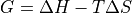
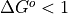

bioenergia
termodinamica
Principio cero de la termodinámica
Si dos sistemas están en equilibrio térmico de manera independiente con un tercer sistema, deben estar en equilibrio térmico entre sí. Este precepto nos ayuda a definir la temperatura.
Primer principio de la termodinámica
Un sistema cerrado puede intercambiar energía con su entorno en forma de trabajo y de calor, acumulando energía en forma de energía interna. La ley es una generalización del principio de conservación de la energía mecánica.
Segundo principio de la termodinámica
La entropía del universo siempre tiende a aumentar. Existen dos enunciados equivalentes:
- Enunciado de Clausius:
No es posible un proceso cuyo único resultado sea la transferencia de calor de un cuerpo de menor temperatura a otro de mayor temperatura.
- Enunciado de Kelvin-Planck:
No es posible un proceso cuyo único resultado sea la absorción de calor procedente de un foco y la conversión de este calor en trabajo.
Tercer principio de la termodinámica
La entropía de un sistema se aproxima a un valor constante a medida que la temperatura se aproxima al cero absoluto. Con la excepción de los sólidos no cristalinos (vidrio) la entropía del sistema en el cero absoluto es típicamente cercano al cero, y es igual al logaritmo de la multiplicidad de los estados cuánticos fundamentales.
energia libre
energia que esta disponible para hacer un trabajo util
- variacion de energia libre
se define con delta G
- delta G
cambio de energia libre * energia para hacer trabajo * se acerca a cero a medida que la reacion se equilibra * predice si una reacion es favorable
- delta H
cambio de entalpia * calor liberado o absorbido durante una reacion * no predice si la reacion es favorable
delta S = calor de la entropioa

equilibro quimico
es cudno las velocidades de reaciones directa e inversa son iguales
valores de K eq
- si la concentracion de productos es 10 y a de reactivos es 2
K eq = 5 se favorece la reacion directa
energia libre estandar
utilidad delta G ° y delta G °”
pass
reaccion exergonica
reacion quimica es esponaea
libera energia al entorno
su K eq es > 1
su  ( negativo )
los productos poseen menor energia que los reactantes
metabolismo
catabolicas y anabolicas